Terms like “Internet café” or “cybercafé” bring us right back to the 90s along with phrases like “web page” or “digital divide”, which were invented to describe new hybrids involving analog and digital, virtual and real as well as the present and near future.
It’s not that these terms have grown obsolete. It’s rather that these 20th-century phenomena they once described have outgrown their terminology. They were born as metaphors, but over time turned into idioms, and their analog parts were the first lose their original meanings. People who did not witness the emergence of the web do not fully understand why browser content is still called a “page”. It’s has also become unclear what public internet access facilities have in common with cafés, yet we continue calling them “internet cafés” or “cybercafés”.
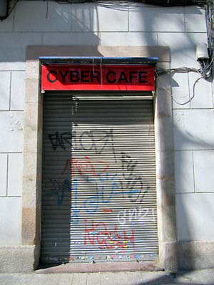
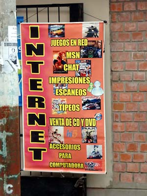
The two terms are have the same meaning. And if you type in “cyber café” on Wikipedia, it instantly redirects you to “internet café”. There is, however, a slight difference in, or rather, in the perception of the two terms. The prefix “cyber” is a more loaded term, and you expect a “cybercafé” to be more serious about their “cyber” decor, while “internet cafés” simply provide a basic internet connection, although the reality is more complex. Some “internet cafés” have been designed to look like a science fiction set, while many “cybercafés” are nothing more than a few PCs under tables and monitors on the same tables.
So the “cyber” or “internet” prefix does not give you much of a clue about the ambiance of any particular café. But there is a difference in the types of people who use the terms “cyber café” and “internet café”. The first term is primarily used by the older generation who have been using the internet since before the emergence of the web or people who perceive it as something larger than the web. I got to know the internet as the WWW, so I belong to the second group and never call an internet café a cybercafé. And for that reason, this term won’t be used here beyond the next paragraph.
Another small detail is that the term “cybercafé” can be traced to the one who coined it, Ivan Pope, the British internet evangelist and web developer. In 1994, he “installed internet access Apple Macs on the café style tables”[1]
at the Institute of Contemporary Art (ICA) in London.
But this wasn’t the first meeting between a café and cyberspace. Three years earlier, in June 1991, SFnet installed 25 computer terminals in various San Francisco Bay Area coffeehouses, thus establishing the SFnet coffeehouse network. This was the forerunner of the internet café business boom that occurred some years later in conjunction with the emergence of the World Wide Web. Through SFnet terminals, one could dial into BBSs, access FidoNet and Internet Mail. The cost was $1 for 20 minutes in 1991, and 50 cents for 8 minutes in 1993.
SFnet wasn’t just providing access, but it was providing access in order to build a local community, to allow people to reconnect with each other. It was social networking in a true sense and avant la lettre.
“SFnet was an attempt to use simple communications technology to bring together two very different social milieus” creator of SFnet, Gregory Wayne, noted, describing his project in the past tense. “Create a network that allowed the well-heeled home user to connect with the young hipster crowd that frequented the smoke filled coffeehouses in the San Francisco Bay Area”.[2]
In an interview with The Washington Post, in 1993 Wayne explained: “It is the most important thing to happen to democracy in a long time. It embraces people who are at the lower end of the economic strata.”[3]
Beside certainly good intentions implied by the attempt to bridge the digital divide (however thin this gap may have been in Northen California), SFnet also connected real places to online worlds. The fascinating aspect about this phenomenon is that coffee plus internet was not some arbitrary combination, but an idealistic act of socialising online communication. When you look at Sfnet’s promo videos (still available at SFnet Archive) , you’ll be surprised by the effort to make people who spend a lot of time in front of their monitors at home or elsewhere seem like “normal” members of society.
On a more pragmatic, interior-design level, the marriage of coffee and network was implemented with much consideration and care. SFnet’s table terminals were unique, custom-made units, constructed especially for the coffeehouses.
The San Francisco Examiner in August 1991 reported that: “The terminals are built into what look like ordinary café tables, with plastic covers to shield keyboards from the inevitable cappuccino spills”.[4]
SFnet’s mid-90s followers didn’t need to be nearly as inventive as mass-produced PCs and modems made installation in pre-existing coffeehouses easier. Moreover, internet cafés began to develop into places where you could go to use computers and get a coffee as well, rather than places where internet complemented coffee.
In June 1995 The Los Angeles Times reported that “Cafés with PCs and access to the Internet, the worldwide computer network, are cropping up all over the world, from London, Edinburgh and Hong Kong to high-tech centres such as Seattle and San Francisco,”[5] by which they meant that access to connected computers was more important than the coffee ritual.
And so, this is what internet cafés were like during the later 90s.
The first decade of the new millennium would introduce new scenarios involving access to the internet in public spaces. Which led to new functions and new intriguing situations.
There are now many cafés with WiFi, filled with people who bring their own laptops to use on the café’s tables; they order a drink, and receive a code to access the network on their receipts or just find themselves connected without any code.
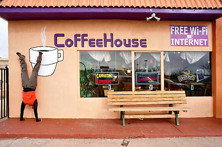
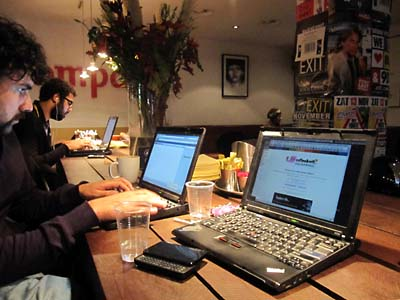
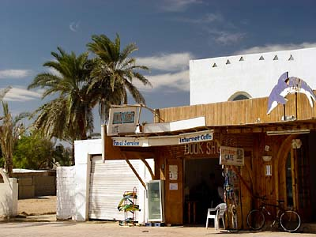
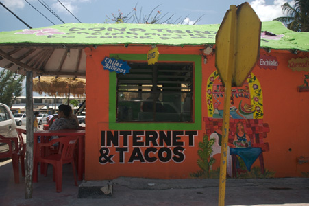
Actually, these places are the ultimate internet cafés — the ones who appear to be following in the footsteps of SFnet. But ironically, no one would ever call them “internet cafés”.
The mid-90s internet café model can still be found in areas with high concentrations of travellers that don’t belong to the mobile elite and lack personal mobile devices. In European and North American cities these kinds of enterprises can be found concentrated near the railway or bus stations, as well as in popular tourist destinations such as beach or ski resorts, etc.
Internet cafés in remoter areas or in underdeveloped countries have lately begun drawing tourists more simply because they exist than because of the services they offer. Charming façades with hand-painted signs, improvised workstations, strange combinations of high technology and traditional cuisine – such as Internet & Tacos in Mexico, which seems to have been photographed by every tourist who has ever passed by – show up in tourist photos alongside idyllic sunsets, old town streets and other sights.
In Russia, Russian Cyber Post serves as a commercial email and internet connection service offered by the Russian Post, available at any one of the 20,000 Russian Post offices across the country. The reality is that these “offices” are often nothing more than a modern sign that says “Киберпочт@” (Cyber Post) hanging from some dilapidated wooden house, shack, or other building in serious need of repair in the middle of rural Russia. This ironic contrast catches the eyes of many a camera-wielding traveller, and photos of these “offices” have become a veritable Russian internet meme.
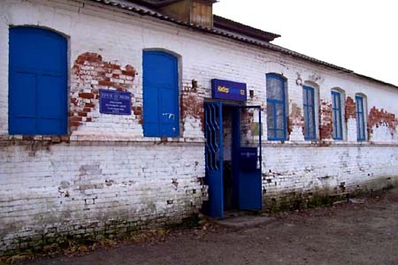
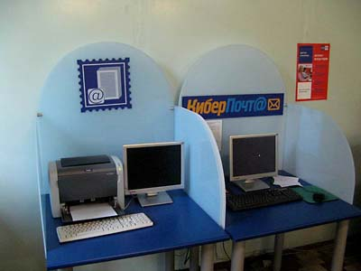
There are also establishments on the other end of the spectrum, which provide fast internet access, powerful computers and relatively large monitors, which serve those who prefer to play multiplayer online games with their peers and away from the watchful eyes of parents or spouses. These establishments are called “PC bangs” in South Korea, but are still called “internet cafés” in the rest of the world, they are not purely an Asian phenomenon and are found around the globe.
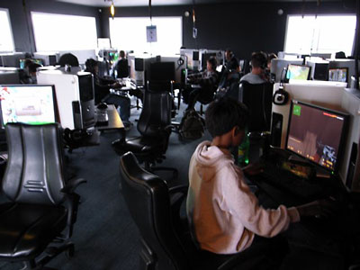
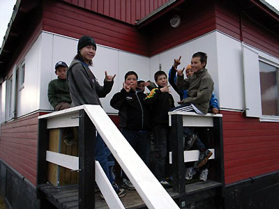

A purely Asian phenomenon that usually has Western tourists reaching for their YouTube accounts are the manga cafés to be found throughout Japan and South Korea, which combine internet access, comic books and TV. Some places even offer private booths with beds that can be rented by the hour.[6]
Private cubicles are also available to internet café users in Africa who use it for different purposes. In November 2010, a Radio Netherlands Worldwide journalist blogged about a typical internet café scene from Cameroon:
The cabins look like giant boxes with curtains to ensure privacy. Early this month, three out of four clients in the internet café were women browsing dating sites in search for potential white husbands. They log on to a dating site and pair off with a virtual male partner… Then they turn on their webcams and start chatting in order to get to know each other better – an innocent flirt that can easily turn into a cybersex session.[7]
Meanwhile, BBC journalist Nick Baker saw something similar in Kenya’s capital of Nairobi, during his global exploration of internet cafés in 2009. Here he noted that internet cafés serve as an access point for the local girls. Baker described it as “a place where they spend all of their free time in front of web cameras, hoping to attract a man from outside of Africa”.[8]
Men also use internet cafés but mostly in connection with their own businesses.
Nick Baker also visited the Busy Internet, in Accra, the capital of Ghana. This café is famous not only because it’s as big as a mall but also because they rent out cubicles. According to the owner, their services are popular with young businessmen who do not yet need or want to rent their own office space.[9] What happens in these cubicles? What is being transacted? We don’t know and we never will because that’s exactly why this kind of enterprise exists.
The plot of Cory Doctorow’s 2010 science fiction novel For the Win mostly takes place in the internet cafés found in China’s cities and India’s slums. Doctorow describes these cafés as “factories” where the gold-farmers of the information age work, mainly teenagers hoping to strike gold playing popular multiplayer online games:
The café had once catered to gamers from off the street, along with love-sick factory girls who spent long nights chatting with their virtual boyfriends, homesick workers who logged in to spin lies about their wonderful lives in South China for the people back home, as well as the occasional lost tourist who was hoping to get a little online time to keep up with friends and find cheap hotel rooms. But for the past two years, it had exclusively housed an ever-growing cadre of gold-farmers sent there by their bosses…[10]
These kinds of stories – whether they’re nonfiction or fiction – where internet cafés turn out to be places from another world, rough or exciting (depending on how you interpret their connection to half-legal or criminal businesses), instead of being merely artefacts of the 90s — certainly appeal to the imagination of the kind of people who have no whatsoever need to use internet cafés. These places seem at once forbidding and attractive.
Internet cafés generally tend to evoke a broad range of emotions as varied as the cafés themselves. Nostalgia for those who remember the bulky non-flat monitors; delight for those who encounter these cafés in tiny hamlets in the middle of nowhere; amazement for those who witness a vast space filled with dozens of computers, all of them occupied; a sense of community for those who can hear their mothertongue spoken, disorientation for those who don't; and contempt – for cafés in your neighbourhood.
Berlin-based artist Aram Bartholl has sensed this (or experienced these emotions himself) and found a great way to satisfy the curiosity of those who never go to internet cafés. In the spring of 2010, he announced: “net.art never died! It just moved to your local Internet shop! Come and join the party!”[11] The idea behind his “Speed Show” was to rent all or most of the computers in an internet café and display works by various net artists on the café’s monitors, one artwork per computer. The media art crowd was finally given a good reason to visit an internet café – not a fancy one but a regular place around the corner. Visitors may close these windows and browse the web, a very proper and classic net art solution. (Incidentally, this is how the 1997 Ars Electronica exhibition of net art and many other shows around that time were organised.)
Photos from Speed Shows reveal scenes bursting with life. Groups of visitors could be seen huddling around computers, with even more spectators behind them. Other photos show crowds smoking and chatting in front of the café. Meanwhile, the café’s hospitable owners and employees sell drinks and snacks. The 90s are totally back!
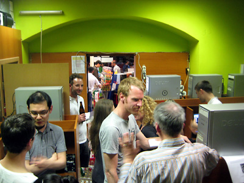
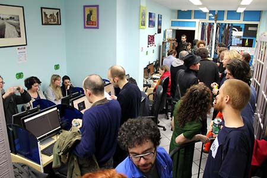
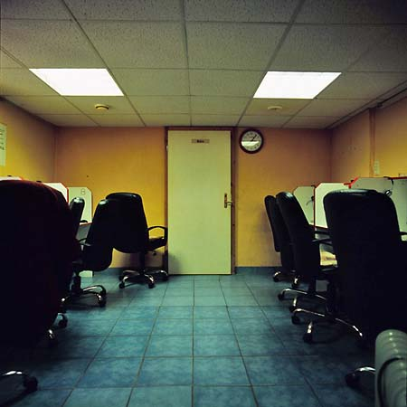
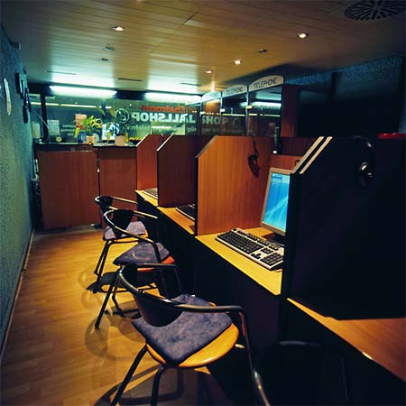
This event was quite the opposite of the photo essay “I-Cafés: Last Days”, by Benjamin Walter and Florian Kröner, two students from my class “Beautiful Zeros and Ugly Ones”. They documented Stuttgart’s internet cafés and found them to be tidy and empty, old-fashioned and no longer needed.
Walter and Kröner’s story seems to ring closer to the truth. I pass by one of these cafés every day, at various times of the day. It’s almost always open because it doubles as a newsstand. The computers are always on, but I rarely see anyone using them. I don’t want to draw any general conclusion from this observation, nor from any of the other aforementioned examples.
Despite their cosmopolitan nature and the many parallels that can be drawn between any cafés chosen at random in time and space, internet cafés remain local phenomena. They spring up, exist, change and disappear as a result of a variety of circumstances. They may be surviving their last days in one city or neighbourhood, thriving in another, or never even existed in yet another city.
In this context, a keen observer will notice that Rotterdam is a truly special place.
Firstly, the city doesn’t have and never really had any “classic” internet cafés. The many cafés and restaurants with Wi-Fi access, library terminals and computers in universities satisfy the needs of a generally well-off and well-educated population and, compared to Amsterdam, a relatively small number of tourists.
Secondly, Rotterdam has a great number of belhuizen (call shops), which took over the internet café functions for an entirely different segment of the city’s population – a poor, less-educated one, with an immigrant background.
And, last but not least, Rotterdam’s belhuizen have been living under a state of siege for over five years now, since the 22 December, 2006, when the “Leefmilieuverordening belhuizen” (Quality of Life regulations regarding call shops) regulations, were enacted by the city.[12] This document prohibits opening new call shops in the city for the period of the next five years and states that if any of the existing 178 call shops listed will close down, it may not be replaced by another. The new regulations basically state that:
This new quality of life regulation will limit the number of call shops in Rotterdam to the current number as of the date this law went into effect, with the understanding that whenever a call shop declares bankruptcy that same address shall not be exploited for the purpose of opening a new call shop. The regulation is meant to fight against the increase in the numbers of call shops by preventing empty real estate from exploited as a call shop.[13]
The reasons for this new law include, among others: oversupply, tax evasion, and the disruption of the social order on the streets where belhuizen are located.
The city’s new policy yielded immediate results. By July 2008, when amendments to this regulation were approved, the list of cafés already had shrunk by 58 entries.
This list[14] that includes the names and addresses of 120 call shops operating in 2008, became the starting point for my journey across Rotterdam. Before leaving home, I checked each of the addresses on Google Street View. Google’s camera cars photographed Rotterdam in the second half of 2008. This search allowed me to cross approximately 20 more names off my list. Walks and bike rides through remote neighbourhoods left me with a list of approximately 90 addresses. The exact number eludes me because several call shops turned out to be either closed or empty, although it wasn’t always possible to determine whether they were closed for good or just for renovations.

One way or another, the number of belhuizen declined by half. The decline was roughly the same across all neighbourhoods. For instance, in Rotterdam North, which had 30 belhuizen, only 16 were still open. In particular, Zwaanshals street which, according to the municipality’s list, had 7 internet belhuizen in 2005 (while Winkelstraatmanager Oude Noorden Koert Vermeulen listed a more realistic 9 belhuizen in 2006), only 5 remained in 2008 — and, by my own count, it was actually only 4.
In the downtown and Delfshaven areas, along Nieuwe Binnenweg street, of the 11 internet cafés listed in 2005, I only managed to find 5 survivors in mid-2011.
Cabo Line, one of the oldest belhuizen and, in its time, the first one to open on Nieuwe Binnenweg (#179 А), has been abandoned since early 2009. The storefront’s appearance is especially dramatic: boarded-up windows; façade smeared with white paint; the remains of an awning flapping in the wind. This is totally the opposite of the image of the original charming call shop with its idyllic cloud motif on its sign, which I saw in “Dispersion”, a book by Columbian architect and urbanist Diego Barajas, which analysed the role that Rotterdam’s call shops played in the lives of Cape Verdean immigrants. The book used Cabo Line as an example of a new re-territorialisation where “the territory of a Cape Verdean nation has been established in the urban dimension of Rotterdam … where a belhuis creates a new local, an artificial condition of home, and a new landscape of its own right.”
[15]
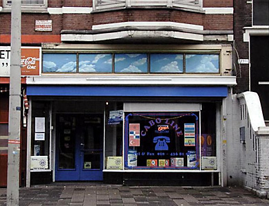
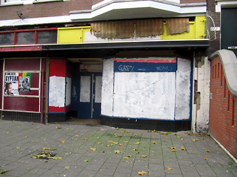

Four of the six listed belhuizen in Kralingen-Crooswijk , are still in business, while in southern Rotterdam, in Katendrecht, the problem, so to speak, was totally solved: DeKaap, the only belhuis on this small peninsula, closed its doors in early 2010.
City officials were rather proud to show me the figures, but they refrained from taking any responsibility for the closing of these cafés, citing market trends as the main reason, including decreased demand for their services forcing their closure. There’s a grain of truth to that: DeKaap, a place where you could make a cheap international call or go online, has been replaced by a fairly expensive organic food store – a far more suitable business for the new, gentrified Katendrecht.


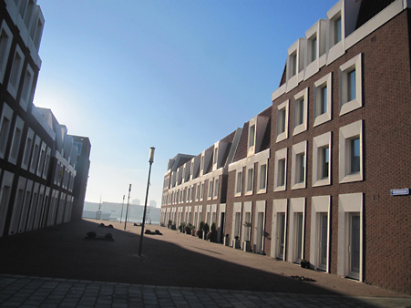
Koert Vermeulen, who has been working on the restoration of the historic appearance of Zwaanhals street in the north of Rotterdam, has listed the same reasons but doesn’t deny that there’s an inverse relationship at work here as well: These nicely restored houses will not attract middle-class families and young professionals if call shops set up business here instead of the bakeries, small shops and cafés they expect. Therefore, the landlords in the neighbourhood have a direct incentive for getting rid of these call shops if they want to attract better tenants.
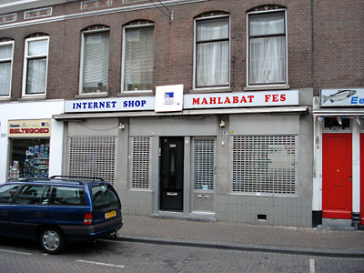
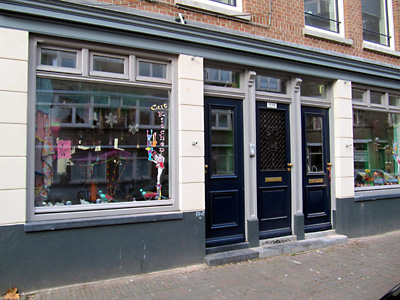
The interests of future tenants are not the only reason why internet cafés have disappeared. The neighbourhood’s residents often demand their closure because of what happens in the street in front of these places (noise around the clock, etc.), which is deemed inappropriate for a residential neighbourhood. This was indeed the case with the cosmopolitan but quiet Burgemeester Meineszlaan in Rotterdam’s west side where residents succeeded in shutting down Berkane, a Moroccan internet café. The premises are now occupied by a community centre.
Belhuis Roxy was located at Mathenesserweg 54 in Delfshaven until recently. “Everyone knew” that the place was a front for drug dealing. In a 2009 raid, police found drugs in the building’s basement. The owner was arrested and the belhuis, to the joy of the local residents, gave way to a day care centre. After the Roxy was shutdown, the total number of Mathenesserweg call shops shrank by half – from 8 in 2005, to 4 in 2010. The survivors remain quite popular.
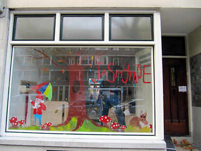
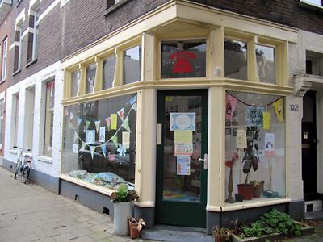
The belhuis Yaar City Public Call Office that used to be located at Adrianastraat 6, right in the heart of downtown, has also closed. The reasons are easy to guess once you read the angry – or frightened – notice on its front door: “It is not allowed to call dealers or to deal in drugs and stolen things.”
But we should also mention that this establishment has not been shut down entirely: It simply moved its operations to a location across the street, to a laundromat that, according to the 2005 list, used to be a belhuis named Shalimar in a previous incarnation.
Some owners close their belhuizen for personal reasons or due to the fact that these types of businesses are easy to abandon as they are to establish. While I was standing in front of the closed metal security gate of a call shop registered with the municipality under the name Callcenter Niaz[16] at Groopstraat 55, which had obviously been closed for a long time already, a small group of locals crowded around me, and from what they could recall, this is what happened: “This place belonged to a Turkish or maybe Moroccan man… Anyway, he sold it to an Antillean boy, but a year ago he decided to go back to school and closed the shop.”

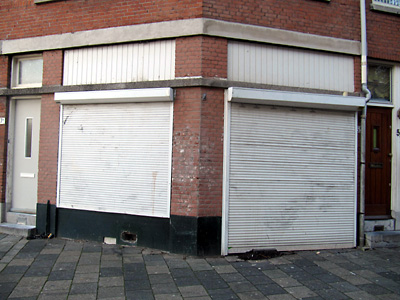
Some of these closure stories, however, are much more sensational and involve violence. At the end of 2010, the Banadir 2 belhuis located at the Eerste Middellandstraat 106 made national headlines[17] when a blast shattered windows, left a gaping hole in the upper floor, destroying a number of computers. Police raided the call shop on Christmas Eve and arrested 12 Somalis on suspicion of involvement in terrorist activities. The suspicion was never confirmed, but this location will never shake off the stigma of having been a terrorist den.
Just like most of them: Even without sensational arrests, common people seem to be convinced that belhuizen serve as hiding places for terrorists, explosives-manufacturing labs, or money laundering establishments for terrorist organisations. And if it’s not explosives – people know – it’s definitely drugs. And even if the money being laundered doesn’t belong to terrorist organisations, it’s being laundered nevertheless.
Belhuizen are not just vaguely unglamorous places for ethnic minorities and communications challenged, they do have a genuinely bad reputation.
This reputation was established from the very start, for one reason, because in the 90s, the call house business in Holland began illegally. At the time, KPN had a monopoly in the telecommunications market. It was only in 1997, after the telecommunications market had been liberalised[18] that legal belhuizen began offering their services through other providers.
Yet the idea that they were shady businesses in this way or another remained and got firmly implanted in the public mind. The drug- and illegal migrant-related cases that make it into the news contribute to it, continuing to shape the public opinion. It must be noted – and the people I spoke to in gemeinde Rotterdam emphasized it, too – that these are rare, isolated cases. There are no statistics that confirm that this kind of business is any more prone to criminal activity than any other. The only recorded offenses associated with belhuizen mostly involve disturbing of the public order, in other words, teenagers hanging around.
The image of teenagers loitering around on belhuizen doorsteps plays a significant role in the shaping of the negative image that are associated with call shops. The aggressive appearance of these teens is enough to make passersby anxious. They also make a lot of noise, they smoke and spit on the sidewalk, and get into fights. Disturbing the public order is the most common offense associated with call shops. It’s also the only offense that any of the café owners will admit to.
Another consideration is profitability. If you do the math, it doesn’t take an economic background to realise that the business of selling phone and internet connection minutes in small shops that have, on average, two or three phone booths and 5 or 6 computers, can only be profitable if the computers were stolen, the taxes are not being paid, and the employees are either underpaid or not paid at all.
In 2003, Diego Barajas wrote: “But often the belhuis is linked to illegal activities – from not regulated labour to tax evasion, to money laundering. Such means become necessary for survival when the calling service is insufficiently profitable.”[19]
Barajas did his research of Rotterdam during the period 2001–2003. According to his calculations, Rotterdam had about 50 functioning belhuizen back then, a number that was to increase fourfold to nearly 200 by the end of 2004, when they were actually officially counted for the first time.
It was a year later, between 2003 and 2004, that their numbers rapidly grew. At the same time, computers with internet connections started appearing in the belhuizen next to – or actually replacing – the phone booths. This is when call shops began undergoing their transformation from providing a service for immigrants to an urban nuisance.
In 2005, the Dutch consulting company Seinpost, was commissioned by the City of Rotterdam to conduct research on Rotterdam’s call shop industry.[20] Seinpost concluded that Rotterdammers would have to spend at least €43 per person per year for the city’s 192 legally registered call shops to turn a profit. If we look at other statistics from Seinpost research, we notice that the majority of call shop clients are aged 20-55 and of a Surinamese, Moroccan, Cape Verdean, Antillean or Turkish background. Doing the math means that each of them would have to spend €216 per year on call shop services in order for these shops to survive. This total looks more realistic, but it’s based on the premise that all 88,500 members of the aforementioned minorities in this age group frequent belhuizen – which would not be very accurate. These figures were thus purely hypothetical. The researchers pointed out that official and accurate statistics did not exist.
I encountered the same problems: call shop data was difficult to obtain and corroborate and was probably obsolete in no time. The figures for numbers of booths, computers, employees, and lists of additional services kept changing. The same can be said about the number of actual belhuizen. According to data collected by the Rotterdam Kamer van Koophandel (Chamber of Commerce) in July 2004, there were 172 belhuizen, while Seinpost counted 192.
Seinpost openly characterised belhuizen as a “market of ill-prepared and/or weak/marginal entrepreneurs” (p. 2) and confirmed that they were an “Industry with a bad image” (p. 41).
But Seinpost also pointed out that call shops were not to blame for increases in crime in the neighbourhoods:
“They are not the cause of increases in crime. They are influenced by their environment because they are mainly located in Rotterdam’s less safe neighbourhoods. However, their generally poor appearance contributes to a subjective perception of insecurity in these areas […] they are in close proximity to the fencing activities of stolen mobile phones and they play an enabling role in the drug dealing trade, and they sometimes function as gathering spots for nuisance-causing youths.” (p. 5)
This “bad image” has as much to do with the generally dilapidated appearance of the call shops as anything else. Their storefronts are usually garish, loud, neon-coloured, based on clip art and fonts that professional avoid to use.
Despite the city’s general discontent with the surviving belhuizen, no complaints have ever been filed regarding their appearance, and there are no regulations governing their design, unlike laws that regulate the appearance of (marijuana-serving) coffeeshops. In 2009, the City decided to reduce the number of coffeeshops as well, eventually reducing the total from 61 to 45. Moreover, a new regulation stated that the windows of the 45 remaining coffeeshops must have clear transparent windows that can be covered up by up to 30% of total window area. The idea was that a coffeeshop with a more open and transparent character would reduce feelings of insecurity and degradation and that the activities inside would be easier to monitor.[21]
Call shops are not regulated by laws that govern appearance and it would be easy to conclude that city authorities couldn’t care less about their appearance.

One could describe their design style as amateurish, or use a more ornate definition – typical of immigrant entrepreneurship. Since my experience in analyzing design lies entirely in the area of web design, I would compare general call shop aesthetic as akin to that of the pages designed by mid-90s web dmasters, which the inventor of the web, Tim Berners-Lee, once unflatteringly compared to a “gnome garden”.[22]
Early web users compiled the design of their pages using standard page elements such as welcome messages, counters, or “next” buttons that were often similar in design, but more often than not were a mix of completely different styles. This hodgepodge design strategy applies to call shop windows that combine shop banner, sponsors stickers, standard neon signs and improvised notices, which are often incorporated into leftover elements from the previous owner’s window designs.
It’s hardly surprising, then, that these types of shop windows and signs stand in sharp contrast to the elegant and "properly" designed signs of many of Rotterdam’s other businesses, among which design is itself a major business sector. It’s interesting though that belhuizen look very different even compared to other examples of immigrant entrepreneurship such as teahouses, currency exchange shops, or kebab shops, for instance. Call shops look decidedly more eclectic, more burdened by visual overload.
The reason may be that call shop owners need to provide a lot of information for potential clients and passersby. they provide lists of their services, prices, additional services, no smoking and drinking signs, posters and ads, notices strictly prohibiting loitering and more. Moreover, their windows are usually plastered over with promotional stickers from every possible telecommunications provider and mobile phone manufacturer in the world.
Moreover, when shop owners choose a name for their business and order their signs they seem to usually opt for combining their own name or that of their hometown or homeland (or that of their most regular customers) with some word that identifies the telecommunications nature of their business. The names, therefore, often consist of two parts – Ace Teleboutique, Abad Connection, Dag Telecom, Abel Tel, Salaam Internet. Sometimes the names are based solely on geographic locations: Angade, Tetouan, Abesha, Nador, Casablanca. Or they have “cyber” connotations, like Belhuis 2000, Skyway Communication, C@llShop or The Matrix Connection. But the design of their windows and signs usually combines ethnic elements with “cyber” elements, which is usually resolved by simply interpreting “ethnic” style as the use of many bright colours, and the “cyber” style, by using images of computers and phones.
The design elements that differentiate call shops from their neighbours’ windows are the classic depiction of a computer from the 80s or 90s – a monitor with a keyboard – and a phone or a handset. These elements make call shops all over Europe resemble each other so much.

The internet cafés of the world have something else in common: They never have home pages or online offices, in fact, they usually have no online presence at all. Most of the time all you can find is their street address and their phone number in the Yellow Pages, which is logical because their customers would only ever see their home pages when they’re already inside the café using one of their computers.
At the same time, internet café signage often proudly displays their web address along with all of the other information and details mentioned earlier. The URL is always identical to the name of the place, and the site itself never really exists. Some Rotterdam examples are the Call Centre Millennium which advertises this address: http://www.ccmillennium.org/ while Belhuis Banadir is supposedly found at http://www.banadir.nl/. It’s not that these pages are empty, they do not exist because the domain names were never registered. They serve a similar function as the clipart computers and big @ signs do – they represent the idea of the internet for window decoration purposes.
You can encounter images of late-20ᵗʰ century analog phones or handsets on the signs of cafés that no longer even have phone booths or phone services as such with the only kind of telephony they offer being Skype. It may seem paradoxical, but only at first glance. The telephone as a graphic symbol seems especially relevant to me because, besides hearkening back to the call shop origins of internet cafés, phones are closely tied to the history of the internet itself.

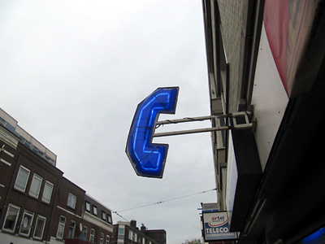
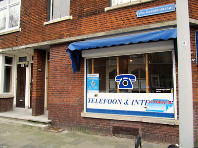
Every time I see a big neon handset on the storefront of an internet café, I remember Lawrence Lessig’s description of the internet’s technical side: “It is a network of the networks that sometimes run on telephone lines.”[23] Of course, today this description can only be used in the past tense, and, of course, Lessig wasn’t describing the internet services provided by call shops. He was writing about the architecture of the net in general. Which, in turn, has changed significantly over the years, to the point that digital data networks have practically replaced the phone network.
But the handset survived, and became a symbol of the internet café perhaps for many more years to come or maybe even forever. This also happened to the image of the 3½-inch floppy disk, which still symbolises the “Save” function despite the fact that today’s interfaces are designed by a generation of graphic artists who have never even seen a floppy disk.
Before I go any further, I have an important disclaimer: When I started describing the appearance of belhuizen and making generalisations, I often spoke in the present tense; however, the cyber-ethnic establishments I mentioned are classic examples of call shops from the first decade of the new millennium. By November 2010, only half of the call shops still had this look. By March 2011, there were even less.
This means that, since the beginning of 2010, Rotterdam’s belhuizen have begun to change their appearance, with many of them opting for a more corporate style.
To be more specific, three styles associated with three mobile virtual network operators (MVNO) that currently share the Dutch market of prepaid phone cards with low-cost calls to international destinations: Lebara Mobile, Ortel Mobile and LycaMobile. These companies provide telecommunication services and products for foreign nationals and foreigners in Europe who want to use their mobile phones while they are abroad.
They are not new to the market of low-budget long distance services. Lebara has been a player in the immigrant community since the beginning of the century; Ortel, since 2005; Lyca, since 2006. Since their inception, these companies have been selling their prepaid cards in call shops. You can still see their logo stickers in the windows of the older or classic call shops. The stickers aren’t particularly large, but more importantly they are always placed right next to each other in the window.
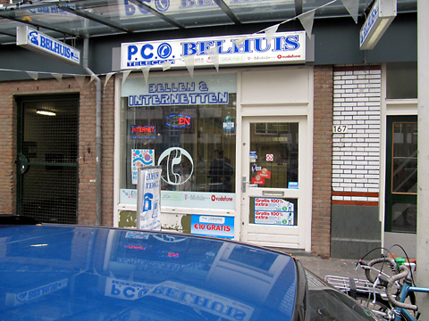
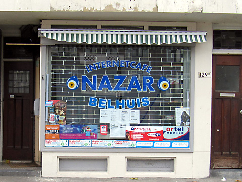
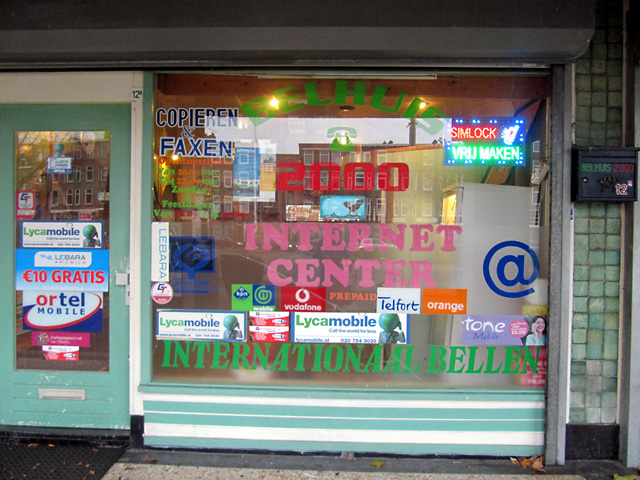
The redesign of the call shops has focused exclusively on their outward appearance, or more precisely, their windows: You can still buy cards from all three providers even in a call shop whose window only displays one of them. And, though the call shops, somewhat proud of the changes, describe the transformations as “franchising”, “branding” would be a more exact term. The operator has converted his belhuis window into advertising space, and the shop’s entrance now often resembles something like an exhibition stand: Two boys dressed in uniforms that match the theme of the window décor distribute handouts advertising new rates and offer passersby information about how to activate their cards.
In exchange, the operator pays for the manufacturing of new shop signs and other decorative elements, and pays the call shop a set fee. To quote the Ortel website: “With an Ortel Mobile Branded Store you are ensured of full support from Ortel Mobile to make your store more attractive and to boost your sales of Ortel Mobile.”
[24]
What exactly does “full support” mean? The Lebara and Ortel PR departments refuse to discuss their relationships with Rotterdam’s call shops, and Lyca has ignored my queries about the conditions of the deals they make with the call shops. Call shop owners, meanwhile, were extremely reluctant to respond to these questions and others regarding financial issues; The few who did agree quoted figures in the range of €200-250 per month.
I cannot vouch for the accuracy of these figure. In a sense, it doesn’t really matter. My assumption is that some of the owners of branded call shops would probably agree to a corporate-style redesign of their windows for free or perhaps they would even be willing to pay a little extra for the right to become a branded call shop. What really matters here is that they’re clearly proud of their new designs. They’re happy that a big corporation has taken them under its wing, even though the association doesn’t go much beyond the visual. They look new, clean, and professional rather than just some dusty corner shop.
I’ve thus far compared the old call shop design to the web design style of the mid-90s. But what can we say about the new style? Can we draw any parallels between it and the web in the new millennium? No, definitely not. The call shop makeovers more closely resemble web design circa 1997-98, before the dot.com era, when big corporations had not yet begun their online businesses, but had already commissioned the design of professional-looking websites. This was back when web designs were still done entirely in Photoshop, with the goal being to distance oneself as much as possible from the eclectic amateur style and treat a page more as an integral whole. The result was usually design based on a single image split into a number of necessary parts. The idea was totally unviable because every update required a complete redesign of the pages. Most of these types of pages quickly fell into disrepair and disintegrated within a period of six months.
This is exactly how call shops look now – like an integral whole, like a single large, colourful image. It doesn’t make them look more modern – on the contrary, they now look exactly like the late 90s, stripped of any positive associations with DIY and grassroots networks that the old shop windows tended to evoke.
Of the aforementioned operators, Lebara’s design is the most distinctive and colourful of the three — and also the biggest in terms of the amount of space its blue-themed design occupies and the size of its logos.

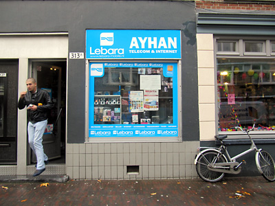
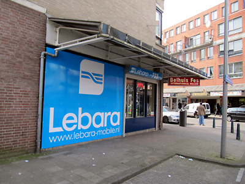
Meanwhile, Ortel’s style is more subdued, with its chief element being white walls, blue window trim and a proportionally-sized logo. Ortel-branded belhuizen look clean, almost elegant.

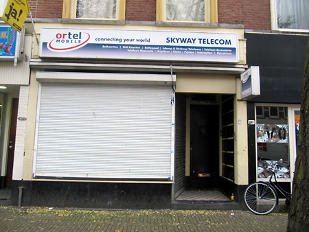
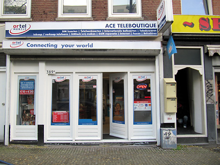
Lyca’s belhuizen are the least eye-catching of the three: its corporate colours are green and aqua, with touches of white and pale yellow, giving the branded shop windows a patchwork look – one might even say that they look almost exactly as they did before they were redesigned. The main Lyca motif is a globe-headed man in a business suit and a tie standing outside the entrance or inside the call shop. Lyca prefers to leave the original shop signs intact – although, perhaps, this is only a temporary solution.

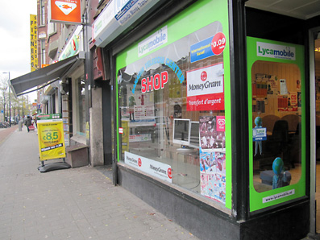
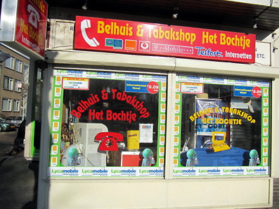
The majority of rebranded call shops belong to predominantly younger entrepreneurs, with some of them barely 20 years of age. To quote the Jamaican owner of one of the oldest call shops, the American Connection: “These boys are not doing any good for themselves.” He has turned down numerous deals offered by various mobile operators, just like some of the other owners of call shops over the years such as Kahn in Charlois and Belhuis 2000 in Delfshaven. He just didn’t want the name of the operator to be in larger letters than the name of his call shop. This type of resistance deserves respect, but it’s hard not to notice that, in general, these gestures have very little influence in the call shop sector, with its characteristic high turnover rate of shop names and shop owners. The younger owners are simply living from day to day and following the current trend.
Call shops are, needless to say, very unstable business ventures, and, considering how unstable the virtual providers market is, these branded shop windows and signs will no doubt soon meet the same fate as those of Photoshop-produced websites – they will simply deteriorate rapidly and disappear. The signs will be torn down or plastered over with new stickers advertising new brands and services. But this probably won’t happen for a couple of months yet. For now, the re-branding and redesigning efforts continue at full speed.

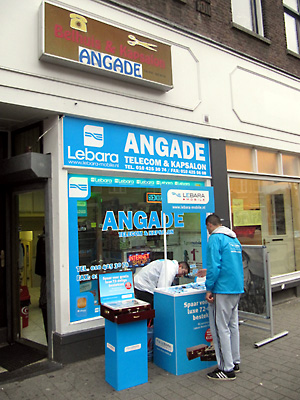
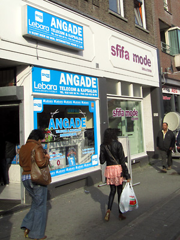
You can never judge a call shop’s interior by its exterior. On the one hand, behind old shop windows you may find brand new computers, comfortable desks and chairs, a modern interior or a well-thought-out ethnic design with African or Eastern elements. On the other, a freshly painted white Ortel-branded doorway may lead to a room that’s so stuffy you can hardly breathe, with bits of food and empty bottles littering the dilapidated chairs and sticky keyboards – even the scraps of paper bearing the access codes seem to stick to your fingers.
All call shops are similar to each other regardless of whether they have been freshly renovated or are in a hopeless state of disrepair. Every shop has pretty much the same system: you enter and receive a slip of paper with an access code. The costs are all pretty much the same wherever you go – about 50 euro cents for 30 minutes. Only the call shops closest to the railway station, such as the first one you encounter on West-Kruiskade, charge about 1.5 times more. Another one located on the Goudse Rijweg charged me €1 because on that particular day, it was the only shop open on Rotterdam’s east side.
Each call shop will have rows of computers, with keyboards with at least a couple of keys rubbed off, marked with numbers to identify the computers. There’s usually a coffee machine in one of the corners – and it’s almost always broken.
On the other hand, no two belhuizen are alike. Even the slips of paper containing the access codes differ from shop to shop. You are never quite sure what you are going to get for your 50 euro cents — a receipt, a piece of cardboard, a strip of paper torn from a notepad, a printout, or a handwritten code.
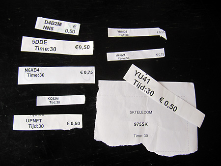
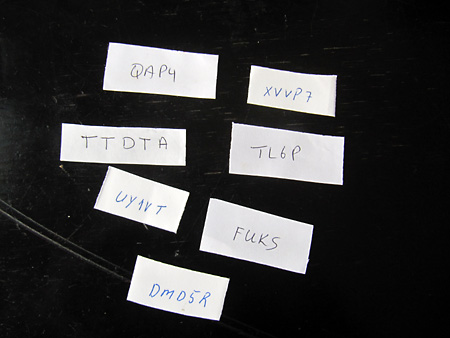
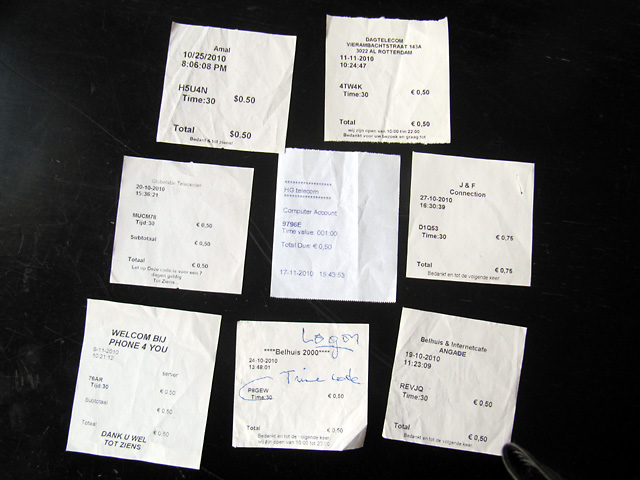
The rows of computer workstations are constructed in similar and yet unique ways. Their details vary: the colours and textures, fonts used for computer numbers, which can be located pretty much anywhere, the hooks to hang the headphones on, their location on the right or on the left, the partitions separating the workstations – rounded, square, or wavy, with computers integrated into the desks or higgledy-piggledy installed later and wires and cables of all colours and sizes, tied into bunches that are never the same.
Some constructions are unique, custom-made to fit into a certain space; others are unique because they were simply thrown together from whatever was available. Regardless, there’s always a feeling of improvisation to each interior – and a lack of any aesthetic supervision or corporate style or adherence to safety regulations.

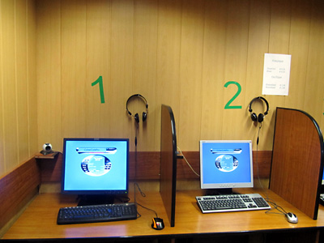
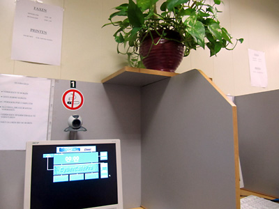
A big part of that improvised feeling comes from the fact that none of Rotterdam’s internet cafés – or, for that matter, anywhere in the world – have Apple computers; instead, the computers are of every other existing brand except Apple. The same is true for the monitors. I never realised how many brands there were before I started frequenting the call shops. Call shop owners always try to buy computers from the same company and matching monitors, but it’s hard to maintain uniformity after some of them start breaking. The older the place, the more variety there is in computer brands and sizes of monitors. Some call shops have now also installed gaming consoles. This creates an even greater and more conspicuous variety of hardware.
Call shops have two basic problems they all have to deal with in the layout of their shops. The first one involves the proper installation of partitions that will separate users from one another. The second problem involves keeping users at a safe distance from the computers. They shouldn’t be able to insert a memory card or a CD, or even push the restart button. There are two ways to solve this problem: either hide the unit or place it in plain view. Whatever strategy the call shop chooses, the end result will lead to improvised solutions to issues involving space, access and privacy. Computers can be locked in a desk drawer, partially hidden, hung from the ceiling, turned backwards, elaborately stacked or connected in such a way that each computer is haphazardly linked to a certain monitor. In many shops you will see computers that are partially disassembled or have their case covers taken off.
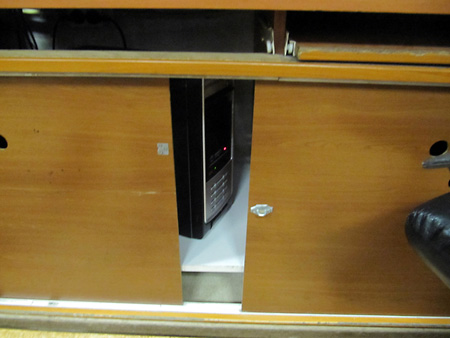


All that tinkering with furniture and equipment provokes my professional curiosity – I’m interested in forms of coexistence between users and personal computers – but also my affection. Even though I realize perfectly well that the owners are hardly motivated by their interest in DIY electronics, that their main motive is to secure their property, that they see users as a potential threat – and, by the way, they react very swiftly if a user makes any unsanctioned move.
Despite that, their tweaks demonstrate the presence of a computer; they manifest its existence.
It’s an important point because a visible computer is rapidly becoming an obsolete paradigm in our modern digital reality. I dare to suggest that internet cafés are the last public spaces where we actually still see the computers – especially such a wide variety of computer brands and styles. Not only do we see them, we can realize that they can be tinkered with, even if all it involves is taking off the case cover.
The Seinpost report discerns three types of shops: the “call shop” (belwinkel), the “call house” (belhuis) and the “mixed form” (p. 24). The call house only provides communication services, the call shop also sells telephone cards and associated products. The mixed form are call shops that double as barbershops, beauty salons or laundromats. The difference between the three has all but lost its relevance 2011.
I would divide belhuizen into three different categories: internet cafés, internet cafés that serve as a front for another type of business and internet cafés that serve as community centres.
There are some belhuizen in Rotterdam that I didn’t even dare to enter. There are other places I’d never visit a second time after spending only half an hour there absorbing the frightened looks of the clients and the owner who couldn’t wait for me to return from wherever I came. Sometimes the customers or owners were – to put it mildly – so unfriendly that I didn’t even bother to take my camera out and left before the 30 minutes I had paid for were over. These were the establishments where people were busy doing something that had nothing to do with watching YouTube videos or calling someone long distance. Obviously, the phone booths were the primary places for some very dubious business transactions.
I’ve also been to many places where the employees were only too happy to accommodate and serve strangers or where the atmosphere was at least quite business-like. These were simply the real internet cafés.
At some other cafés I definitely felt out of place, but, at the same time, couldn’t help but notice that these belhuizen served as community centres where mothers could leave their children or where teenagers could play online games or just hang out. Girls were also welcome – to play online games, to work on their school presentations or to giggle about some YouTube video.
One such place is Ace Telebutique (formerly known as Maroc Telecom), a spacious call shop with six computers in the back room. Its new owner, Ace, is banking on the computer gaming market and the huge screens he has installed in the main room. He likes the idea of holding an exhibition of Piet Zwart Institute students’ semester projects, called “Rebelhuis”[25] in the speedshow format because he wants his “boutique” to be on the cutting edge of a place where people can meet, hang out and socialise.
Another example of a community centre is belhuis Nazar – a very popular place among Mathenesserweg residents. It has a kind of preschool ambiance at noon and by the evening has a “PC bang” atmosphere. Nazar offers internet access, TV, modern gaming consoles, big monitors, couches and a parrot in a cage.
Nazar’s owner Abdullah is constantly updating the café’s interior and upgrading his services. When I came by in November 2010, one of Nazar’s walls looked like a truly improvised artwork.
In March 2011, when I came back to take better photos of this self-made 19-inch rack (in the left corner of the photo), I found that the wall had been plastered over with wallpaper, and the rack covered with a sheet of black plastic to match the huge new black couches. Abdullah had also installed a new large flat-screen TV on the wall. The room now resembled some kind of VIP lounge.
When I spoke to Abdullah later, I assumed that local city officials must have been very pleased with the way his belhuis now looked – so clean and modern – plus its function in the neighbourhood as a place where teenagers could spend their free time in the most innocuous ways possible. He replied that, unfortunately, it cuts both ways. Once he began focusing on serving gamers and teenage customers, he started – for the first time in seven years – having problems with the police. Teenagers can’t stay inside too long before they have to go out for a smoke or to chat with their friends outside in front of his shop. All this despite the fact that he has a sign on the door that forbids loitering in front of his call shop. All this means more noise, smoke, and the discontent of local residents who do not hesitate to call the police.
What a sad contradiction: The most useful belhuizen also tend to cause the most public disturbances. Of course, city officials could simply ignore the fact that Nazar serves as a community centre, shut it down and open an official centre in its place, but that would only solve the issue in this single neighbourhood, not the problem in general. The teenagers would simply move to the next block and start hanging out in front of a different shop.
Nazar has continued to evolve through a variety of stages of development – from call shop to internet café to computer club. I recommend that we pay special attention to places like this and support their development, establishments not only interested in paying customers inside, but also bringing people closer to the computers in every sense of the word.
And I would start with software.
For all the variety in hardware that these call shops offer, when users actually sit down in front of a monitor, they pretty much get the same thing everywhere. The improvisation ends where the software begins – even in the most modern and advanced of call shops.
This was the most difficult aspect of my call shop experiences. That internet cafés exist, and that they are mainly used by poor immigrants, says a lot about social inequality. But what customers are forced to interact with on the level of software says a lot about digital inequality as well.
All of Rotterdam’s internet cafés run Windows XP and Oneroof’s “CyberCaféPro” software that regulates what users can do and counts the time they are online. Its standard splash screen gives way to reveal a package of Windows applications that inevitably includes Skype, the bane of many café owners. Nizar, the owner of Ayhan, a Turkish internet café, told me he deleted Skype because it created too much noise: “If they want to talk, they can do it in the booths.” Many cafés offer a “games” option – the featured game is invariably World of Warcraft.
I only once stumbled upon a café that hadn’t installed any programs to regulate access. Kahn International, a café that has been around for 11 years, is owned by a Bangladeshi entrepreneur named Kahn. It’s a pretty shabby place; even Seinpost in 2004 noted that it “leaves much to be desired.” Instead of an access code, the owner gave me a slip of paper with a time frame on it. To my surprise, his computers used the alternative browser Firefox. I asked Mr. Kahn why he had chosen a different browser. He pointed out that he had no idea what Firefox was and what it was doing on the desktop, but, since no one ever complained about it, he saw no reason to change anything. I also encountered Firefox at Belhuis 2000, which was also run by a charismatic owner who had created a gorgeous Moroccan-inspired décor. He had deliberately installed this alternative browser because his clients kept asking for it.
But these were exceptions. The standard is Microsoft Internet Explorer as the default browser and Microsoft Word for word processing. It is precisely the exclusive use of Microsoft and Oneroof products that makes the general belhuis experience so disappointing. Call shop clients can usually be heard complaining about the ratty chairs and dirty keyboards, but these discomforts are really minimal compared to being forced to operate within the constraints of software that gives you no options, monitors every click that you make and, along the way, bombards you with ads and annoys you with countless errors.
Furthermore, you can’t install new programs or fully explore anything. In other words, the computer doesn’t belong to you and makes you aware of this constantly. You’ll just have to deal with it for the next half hour. This is not that big a deal if all you need is half an hour – no one frets about the restricted access that Internet Explorer offers in a railway station café when all you want to do is to check your email and print out your train ticket.
But we’re talking about belhuizen, places where people go every day to spend hours on a computer, which is often the only computer they have access to. So this gives us an entirely new perspective. The digital divide suddenly becomes very obvious. On the one side the users with personal computers – personal in a literal sense that they can choose the programs they want to install. On the other side, you have the belhuis clients.[26]
It might sound like some utopian idea – maybe it’s already too late – but I think that the earlier incarnation of belhuizen, which are, in fact, clubs could still turn the situation around. Instead of being places for ill-educated youth, they could become centres for computer education. They have even more potential than official schools in the sense that they offer the aforementioned independence and their historically openness to hardware. They could start by getting rid of the atavistic OneRoof security system, then install Linux and let users get a feel for what it’s like to have a computer of their own; teach them how to configure a network – give them enough knowledge to at least enable them to open their own computer clubs.
These days, when a call shop closes down, it will not be replaced by another – this has been legally determined. Instead, another kind of business will eventually take its place.
In March 2011, Stef Franken, the Horeca Coördinator Interventieteam Deelgemeente Noord (Rotterdam North’s Hotel and Catering Sector Intervention Team) pointed out that their department has pretty much eliminated belhuizen from its agenda because the sector has become sufficiently stable. But there is increased concern about the number of African hair salons. In 2011, they began popping up as rapidly as the belhuizen did eight years ago.
Who needs that many hair salons? We could wait for a new research funded by the city council to get a better perspective, but, in fact, 150 years ago Dostoyevsky let a character from Crime and Punishment, the “little man” Marmeladov, answer this question: “For every man must have somewhere to go. Since there are times when one absolutely must go somewhere!”